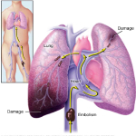

La Enciclopedia Ilustrada de Salud (Health Illustrated Encyclopedia) de A.D.A.M. incluye más de 4.000 artículos acerca de enfermedades, exámenes, síntomas, lesiones y procedimientos quirúrgicos. También contiene una biblioteca extensa de fotografías médicas e ilustraciones.
Índice alfabético de temas
Temas destacados
La varicela consiste en una erupción roja que causa picazón y se manifiesta en la cara, cuero cabelludo,
pecho, espalda y, en menos cantidad, en los brazos y piernas.
Más información

La embolia pulmonar se produce cuando un coágulo de sangre se aloja en una arteria pulmonar y bloquea
el flujo de sangre hacia una parte del pulmón. Los coágulos de sangre suelen comenzar en las piernas y ascienden hacia el lado derecho del corazón para luego alojarse en los pulmones
Más información